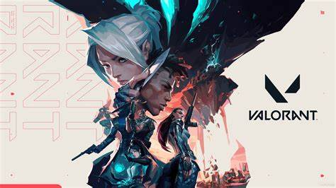
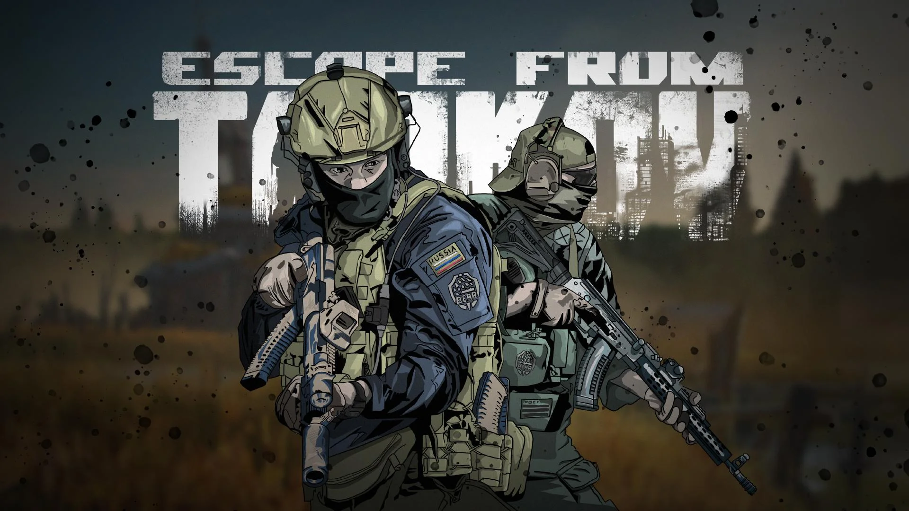
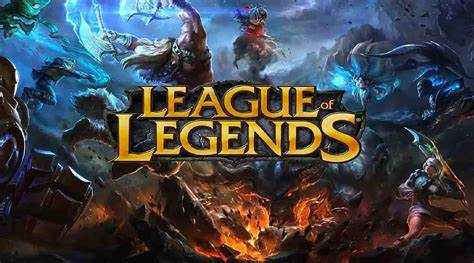
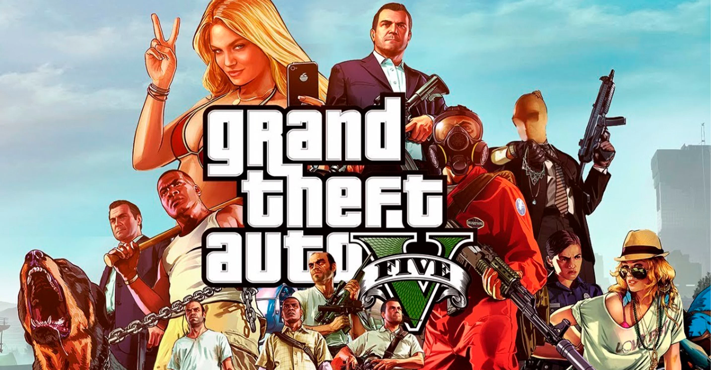
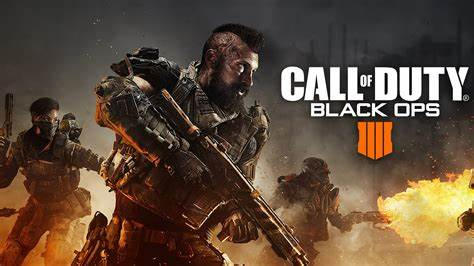

Valorant

Inclui agentes com habilidades adaptativas, rápidas e letais.Cada Agente é único, assim como os momentos de destaque de cada partida!
Tarkov

Use a imersão a seu favor O ultrarrealismo de Escape from Tarkov o torna um jogo único e exige atenção do jogador. A interface do jogo não mostra marcadores ou indicadores visuais como em outros títulos de FPS.
League of Legends

League of Legends é um jogo onde nele temos duas equipes de 5 campeões cada disputando uma vitória na batalha dentro do mapa do jogo.
Grand Theft Auto

É importante conquistar algumas coisas básicas para que seu início de vida seja menos “turbulento”. Claro, estamos falando de GTA, nada aqui será paz e tranquilidade, mas, com algumas dicas, você pode obter o mínimo para começar, sem muita dificuldade
Counter-Strike

A ideia básica de Counter-Strike: Global Offensive é a luta entre duas equipes, terroristas e contra-terroristas, em uma variedade de mapas.
Call of duty

Há um evento especial com jogadores de futebol por conta da Copa do Mundo deste ano, sendo possível desbloquear pacotes de operadores baseados em atletas, como Lionel Messi, Paul Pogba e Neymar Jr., por tempo limitado.